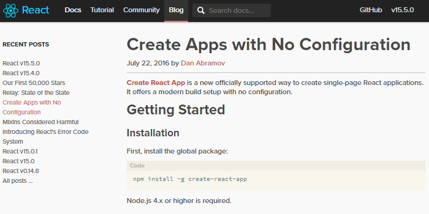
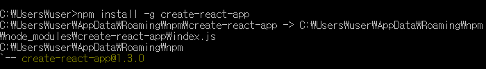
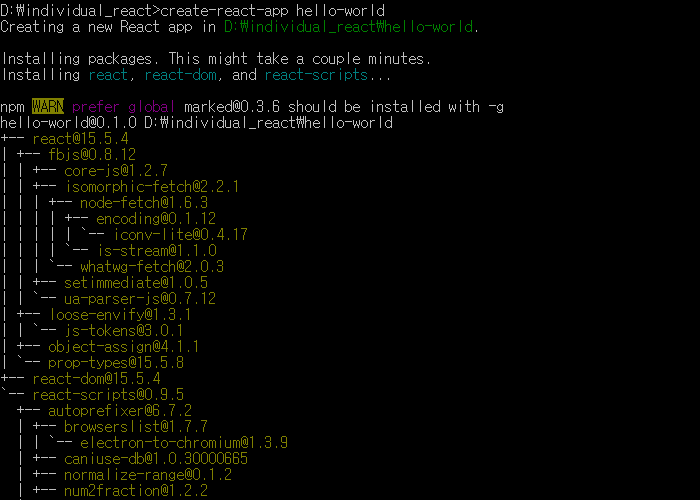
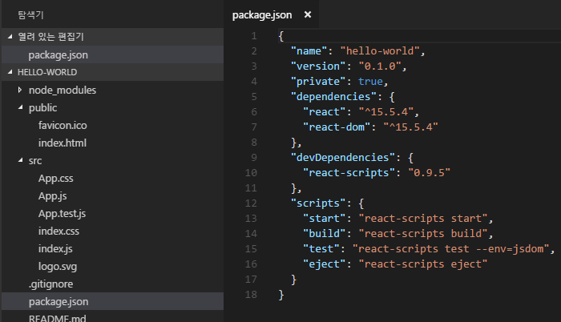
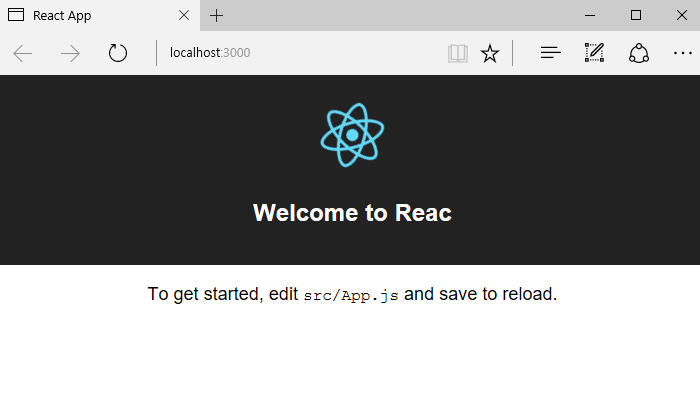

Create react app
https://facebook.github.io/react/blog/2016/07/22/create-apps-with-no-configuration.html
React프로젝트의 개발을 위해 기존에는 webpack, babel등의 설정이 필요했으나 이러한 일련의
과정을 생략하고 React프로젝트를 쉽게 생성할 수 있게한다.

create-react-app을 전역 설치 한다.(ex: Node.js 4.x 이상의 버전 필요)
npm install -g create-react-app

create-react-app을 설치하고 hello-world프로젝트를 생성한다.
create-react-app hello-world

터미널 창에서 npm start를 실행하면 브라우저가 실행된다.
npm start

브라우저에 화면이 나타나면 정상이다.
